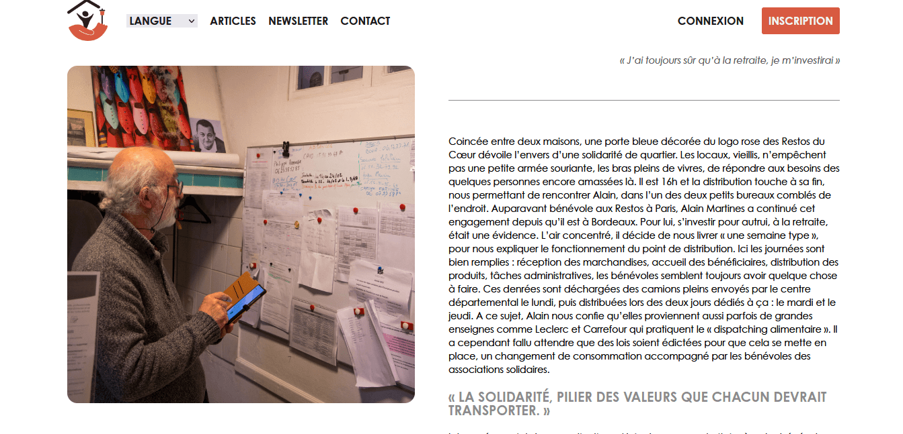
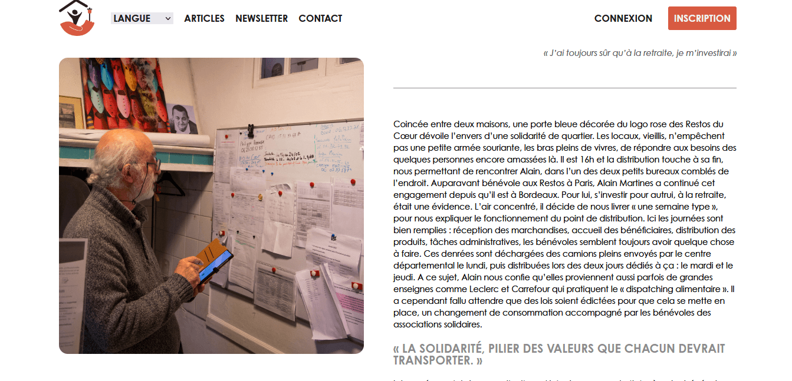

CINEMA LE FESTIVAL
- CHECK IT OUT -Projet de refonte d'un site de cinéma d'animation et d'effet spéciaux à Bègles, seulement front-end. J'ai participé au design et au développement.
Outils : Visual Studio Code (html/scss), Jekyll, GitHub, Figma, Trello
Equipe de 5

 
